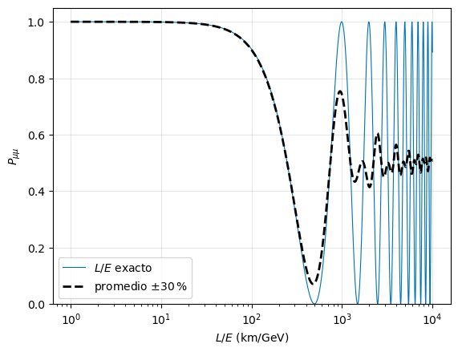
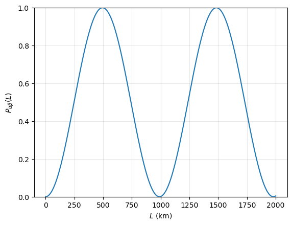

Leptones: la mano izquierda de la Naturaleza#
# Configuración: el código auxiliar está en el paquete notebooks/fnyp/
try:
import fnyp
except ModuleNotFoundError: # en Google Colab hay que traerse antes el repositorio
!git clone -q https://github.com/jahernando/USC-FNyP.git
import sys; sys.path.append('USC-FNyP/notebooks')
from fnyp.inicio import *
Last version Thu Oct 8 13:39:15 2026
Objetivos#
El tema tiene tres partes:
Los leptones y la universalidad. Tres familias que se comportan igual frente a la interacción débil, una vez descontada la masa.
La violación de la paridad. El experimento de Wu, la estructura \(V-A\) de las corrientes cargadas y la quiralidad: la interacción débil solo ve la mano izquierda de los fermiones. Sus consecuencias: la helicidad del neutrino y la desintegración del pión.
Las oscilaciones de neutrinos. Los neutrinos cambian de sabor al propagarse, lo que exige que tengan masa: la primera grieta del Modelo Estándar.
El desarrollo matemático de la quiralidad está en ext-quiral.
1. Los leptones y la universalidad#
1.1. Características de los leptones#
Los leptones se presentan en tres generaciones, agrupados en dobletes:
\(e\) |
\(\mu\) |
\(\tau\) |
\(\nu\) |
|
|---|---|---|---|---|
masa |
0.511 MeV |
105.7 MeV |
1777 MeV |
\(< 0.45\) eV |
carga |
\(-1\) |
\(-1\) |
\(-1\) |
\(0\) |
vida media |
estable |
\(2.197\,\mu\mathrm{s}\) |
\(290.3\) fs |
estable |
El electrón es estable porque es el leptón cargado más ligero y la carga se conserva; el neutrino, porque es el leptón más ligero. Cuánto vuelan el \(\mu\) y el \(\tau\) antes de desintegrarse lo calculaste en el taller «¿Cuánto vuela una partícula inestable?» de la introducción.
1.2. Desintegraciones#
fracción de desintegración |
|
|---|---|
\(\mu \to e + \bar{\nu}_e + \nu_\mu\) |
\(\simeq 100\,\%\) |
\(\tau \to \mu + \bar{\nu}_\mu + \nu_\tau\) |
\(17.4\,\%\) |
\(\tau \to e + \bar{\nu}_e + \nu_\tau\) |
\(17.8\,\%\) |
\(\tau \to \mathrm{hadrones} + \nu_\tau\) |
\(64.8\,\%\) |
desintegraciones del \(\mu\) (arriba) y del \(\tau\) (abajo) |
1.3. Conservación del número leptónico#
En todas las interacciones observadas se conserva el número leptónico total, \(L\) (leptones menos antileptones), y también el de cada familia por separado:
\(L_e\) |
\(L_\mu\) |
\(L_\tau\) |
\(L\) |
|
|---|---|---|---|---|
\((e, \nu_e)\); \((e^+, \bar{\nu}_e)\) |
\(+1\); \(-1\) |
\(0\) |
\(0\) |
\(+1\); \(-1\) |
\((\mu, \nu_\mu)\); \((\mu^+, \bar{\nu}_\mu)\) |
\(0\) |
\(+1\); \(-1\) |
\(0\) |
\(+1\); \(-1\) |
\((\tau, \nu_\tau)\); \((\tau^+, \bar{\nu}_\tau)\) |
\(0\) |
\(0\) |
\(+1\); \(-1\) |
\(+1\); \(-1\) |
Los experimentos que buscan su violación solo han puesto límites. El más fuerte es el de \(\mu \to e + \gamma\), que conserva la carga y \(L\) pero no \(L_e\) ni \(L_\mu\): \(\mathcal{Br} < 1.5 \cdot 10^{-13}\) (MEG II, 2025).
[+] Mirador. Las oscilaciones de neutrinos (tercera parte del tema) sí violan el número leptónico de familia: un \(\nu_\mu\) llega como \(\nu_\tau\). El número leptónico total se sigue conservando.
[>] Taller — ¿Qué se conserva?
Comprueba que \(L_e\), \(L_\mu\), \(L_\tau\) y \(L\) se conservan en las desintegraciones de la tabla.
¿Puede ocurrir \(\mu \to \nu_\mu + e + e^+\)? ¿Y \(\tau \to \mu + \mu + \mu^+\)? Di qué ley violaría cada una.
¿Por qué \(\mu \to e + \gamma\) es tan buena sonda de física nueva?
Solución
Por ejemplo, \(\mu \to e + \bar{\nu}_e + \nu_\mu\): \(L_\mu\): \(1 \to 0 + 0 + 1\); \(L_e\): \(0 \to 1 - 1 + 0\). Igual con el \(\tau\).
\(\mu \to \nu_\mu + e + e^+\) no conserva la carga (\(-1 \to 0 - 1 + 1 = 0\)): prohibida sin más. En cambio \(\tau \to \mu + \mu + \mu^+\) conserva la carga (\(-1 \to -1\)) y \(L\) (\(1 \to 1\)), pero no \(L_\tau\) (\(1 \to 0\)) ni \(L_\mu\) (\(0 \to 1\)): violaría el número leptónico de familia. No se ha observado: \(\mathcal{Br} < 2 \cdot 10^{-8}\).
En el Modelo Estándar (con las masas de los neutrinos) su fracción es del orden de \(10^{-54}\): inobservable. Cualquier señal sería física nueva.
1.4. Descubrimientos de los leptones#
El positrón (1932): C. Anderson, en una cámara de niebla dentro de un campo magnético, con rayos cósmicos (lo vimos en perspectivas).
El muón (1936–37): Anderson y Neddermeyer encuentran en los rayos cósmicos una partícula penetrante; en 1947, con emulsiones fotográficas, se separa del pión, que se desintegra en él.
El tauón (1975): M. Perl, en el colisionador \(e^+e\) SPEAR de SLAC, con sucesos \(e^+ + e \to \tau^+ + \tau\) en los que un \(\tau\) daba un electrón y el otro un muón.
El \(\bar{\nu}_e\) (1956): F. Reines y C. Cowan, junto al reactor de Savannah River.
El \(\nu_\mu\) (1962): L. Lederman, M. Schwartz y J. Steinberger, con el primer haz de neutrinos (AGS de Brookhaven): los \(\nu_\mu\) producen muones y no electrones, así que son distintos de los \(\nu_e\).
El \(\nu_\tau\) (2000): la colaboración DONUT, en Fermilab, con emulsiones.
Del espectro \(\beta\) al neutrino#
El espectro continuo de la desintegración \(\beta\) y la solución de Pauli, un neutrino neutro y casi indetectable, los vimos en la introducción. La alternativa que se discutía entonces era abandonar la conservación de la energía:
«En el estado actual de la teoría atómica podemos decir que no tenemos ningún argumento, ni empírico ni teórico, para defender el principio de la energía en el caso de las desintegraciones \(\beta\).»
— N. Bohr, Faraday Lecture (1932)
la carta de Pauli a los «señoras y señores radiactivos» (1930) |
La detección del neutrino#
B. Pontecorvo [>] propuso usar el enorme flujo de antineutrinos de un reactor y la desintegración \(\beta\) inversa:
En 1956, F. Reines y C. Cowan la observaron junto al reactor de Savannah River (Carolina del Sur), con un flujo de \(\sim 10^{17}\ \bar{\nu}/(\mathrm{m^2\,s})\). El umbral, \(1.8\) MeV, lo calculaste en el taller «¿Cuánta energía hace falta?» de la introducción.
|
|
el detector de Cowan y Reines |
esquema de la detección [AB2.6] |


La firma es una doble coincidencia retardada: primero los dos fotones de \(511\) keV de la aniquilación del positrón; unos microsegundos después, los fotones de la captura del neutrón en el cadmio disuelto en el agua.
Reines y Cowan se lo comunicaron a Pauli por telegrama:
«Nos complace informarle de que hemos detectado definitivamente neutrinos de los fragmentos de fisión observando la desintegración beta inversa de protones. La sección eficaz observada concuerda bien con la esperada, de seis por diez a la menos cuarenta y cuatro centímetros cuadrados.»
— F. Reines y C. Cowan, telegrama a W. Pauli, 14 de junio de 1956
el telegrama |
[AB2.2]
1.5. Formulemos algunas preguntas#
Ya conoces los seis leptones: cómo se descubrieron, cómo se desintegran y qué números se conservan. Y los neutrinos en particular: neutros, casi sin masa, solo sienten la interacción débil y tardaron 26 años en detectarse.
Antes de seguir, mójate: ¿qué preguntas te harías sobre los leptones, y en especial sobre los neutrinos? Haz tu lista. A algunas responderemos en este tema; otras no tienen respuesta todavía.
Las que responde el tema, y las que no#
Las que responde este tema:
¿Se comportan igual las tres familias? Sí, una vez descontada la masa: es la universalidad, a continuación.
¿Por qué solo vemos neutrinos a izquierdas? Porque la interacción débil solo ve la mano izquierda: segunda parte.
¿Tienen masa? ¿Cambian de sabor? Sí, las dos cosas, y una implica la otra: las oscilaciones, tercera parte.
La que responde otro tema:
¿Solo hay tres? Tres neutrinos ligeros: lo dice la anchura del \(Z\), en el tema del Modelo Estándar (sección 2.4).
Las que siguen abiertas:
¿Por qué tres? Nada en el Modelo Estándar fija el número de familias. Dos pistas: cada familia de leptones va con una de quarks (la teoría lo necesita para ser consistente), y con tres familias de quarks cabe la violación de \(CP\). Kobayashi y Maskawa predijeron la tercera por eso, en 1973, antes de que se descubrieran el \(\tau\) y el quark \(b\).
¿Por qué esas masas? En el Modelo Estándar cada masa es un parámetro libre, el acoplo de la partícula con el Higgs. Van de \(0.511\) a \(1777\) MeV, y los neutrinos están por debajo de \(0.45\) eV, un millón de veces más ligeros que el electrón. Nadie sabe explicar el patrón.
¿Son fundamentales? Hasta donde podemos ver, sí: ningún experimento ha encontrado estructura en los leptones, hasta distancias de \(\sim 10^{-19}\) m, diez mil veces menos que el radio del protón.
¿Es el neutrino su propia antipartícula? Si lo es (un neutrino de Majorana), existe la desintegración doble \(\beta\) sin neutrinos, \({}^{136}\mathrm{Xe} \to {}^{136}\mathrm{Ba} + e + e\), que viola el número leptónico en dos unidades. La buscan, entre otros, NEXT, en el Laboratorio Subterráneo de Canfranc, y KamLAND-Zen, en Japón.
1.6. Universalidad leptónica#
La universalidad dice que el acoplo del \(W\) es el mismo para las tres familias. Lo comprobamos con los datos, suponiendo que cada familia pudiera tener su propio acoplo, \(g_W^\alpha\) (\(\alpha = e, \mu, \tau\)).
La anchura del muón es (la regla de Sargent de ext-cinematica, sección 7, con la relación entre \(G_F\) y \(g_W\) de ext-feynman, sección 4):
con \(G_F/\sqrt{2} = g_W^2/8m_W^2\). Para el \(\tau\), igual con \(m_\tau\) y \(g^\tau_W\):
En el cociente se cancelan \(g^e_W\), \(m_W\) y los números:
El acoplo es el mismo para el \(\mu\) y el \(\tau\), al tres por mil: \(g^\mu_W = g^\tau_W = g_W\). Toda la diferencia entre sus vidas medias, siete órdenes de magnitud, la pone la masa, a la quinta potencia.
Con \(G_F = 1.166 \cdot 10^{-5}\) \(\mathrm{GeV}^{-2}\) y \(m_W = 80.37\) GeV, \(g_W = 0.65\). [AB7.2]
[>] Taller — La universalidad en números
Ejecuta la celda: calcula \((g^\tau_W/g^\mu_W)^2\) y su error a partir de los datos del PDG.
¿Qué medida domina el error?
Haz lo mismo con los dos canales del \(\tau\), \(\tau \to \mu + \bar{\nu}_\mu + \nu_\tau\) y \(\tau \to e + \bar{\nu}_e + \nu_\tau\), para obtener \((g^\mu_W/g^e_W)^2\). ¿Por qué el cociente de fracciones, \(17.39/17.82 = 0.976\), no es exactamente \(1\)?
# universalidad: (g_tau/g_mu)^2 a partir de vidas medias, masas y la fracción de tau -> e
tau_tau, dtau_tau = 290.3e-15, 0.5e-15 # s
m_tau, dm_tau = 1776.93, 0.09 # MeV
br_e, dbr_e = 0.1782, 0.0004
tau_mu, m_mu = 2.1969811e-6, 105.6584 # s, MeV
ratio = (tau_mu * m_mu**5) / (tau_tau * m_tau**5) * br_e
dratio = ratio * np.sqrt((dtau_tau/tau_tau)**2 + (5*dm_tau/m_tau)**2 + (dbr_e/br_e)**2)
print(f' (g_tau/g_mu)^2 = {ratio:.4f} +- {dratio:.4f}')
print(f' contribuciones: tau_tau {dtau_tau/tau_tau:.4f}, m_tau^5 {5*dm_tau/m_tau:.4f}, Br {dbr_e/br_e:.4f}')
(g_tau/g_mu)^2 = 1.0024 +- 0.0028
contribuciones: tau_tau 0.0017, m_tau^5 0.0003, Br 0.0022
Solución
\((g^\tau_W/g^\mu_W)^2 = 1.002 \pm 0.003\).
La vida media del \(\tau\) y la fracción de desintegración, a partes casi iguales (\(0.17\,\%\) y \(0.22\,\%\)). La masa entra a la quinta potencia, pero se conoce tan bien que apenas contribuye.
Los dos canales del \(\tau\) tienen la misma vida media y el mismo \(m_\tau^5\): el cociente de anchuras es el de fracciones, \(0.976\). La diferencia con \(1\) es de espacio fásico: el muón no es despreciable frente al \(\tau\), y el factor exacto, \(f(m_\mu^2/m_\tau^2) \simeq 0.973\), la explica entera. Corregido por él, \((g^\mu_W/g^e_W)^2 \simeq 1.00\).
2. La violación de la paridad#
La paridad, \(P\), invierte las coordenadas espaciales, \({\bf x} \to -{\bf x}\): es ver el experimento en un espejo y girarlo \(180^\circ\) (la ficha «El espejo y la paridad», más abajo). Durante siglos se dio por supuesto que la Naturaleza no distingue el experimento de su imagen. En 1956, Lee y Yang señalaron que para la interacción débil nadie lo había comprobado.
[i] Ficha — Cómo se transforman las magnitudes bajo paridad
tipo |
bajo paridad |
ejemplos |
|---|---|---|
escalar |
\(+1\) |
energía, masa, temperatura |
pseudoescalar |
\(-1\) |
helicidad, \({\bf S}\cdot{\bf p}\) |
vector |
\(-1\) |
posición, momento, campo eléctrico |
vector axial |
\(+1\) |
momento angular, espín, campo magnético |
Un vector axial es un producto vectorial de dos vectores (\({\bf L} = {\bf r} \times {\bf p}\)): los dos cambian de signo y el producto no. En los espinores, la paridad es \(\Psi(t, {\bf x}) \to \gamma^0\,\Psi(t, -{\bf x})\): \(\gamma^0\) deja igual a \(\gamma^0\) y cambia el signo de las \(\gamma^k\) (\(\gamma^0\gamma^0\gamma^0 = \gamma^0\), \(\gamma^0\gamma^k\gamma^0 = -\gamma^k\)), como la paridad deja igual \(t\) y cambia el signo de \({\bf x}\) (ext-quiral, sección 2.2).
[i] Ficha — El espejo y la paridad
Un espejo invierte solo la coordenada perpendicular a él; la paridad, las tres. Se pasa de uno a otra con un giro: un espejo horizontal, \((x, y, z) \to (x, y, -z)\), seguido de un giro de \(180^\circ\) alrededor del eje \(z\), \((x, y) \to (-x, -y)\), da \((x, y, z) \to (-x, -y, -z)\). En general:
Como las leyes físicas no cambian al girar el experimento, si la Naturaleza es simétrica frente a un espejo lo es frente a la paridad, y al revés: para el argumento sirve cualquiera de los dos.
La regla del espejo. De un vector (el momento) cambia de signo la componente perpendicular al espejo y no las paralelas. De un vector axial (el espín), al revés: cambian las componentes paralelas al espejo y no la perpendicular. El espín es un giro, y un giro alrededor de un eje paralelo al espejo se ve al revés en él.
Ejemplo: una partícula que gira y avanza, con el espín y el momento hacia arriba: helicidad positiva.
una partícula de helicidad positiva, en un espejo vertical y por paridad |
Espejo vertical: el momento, paralelo al espejo, no cambia; el giro se ve al revés y el espín, también paralelo, se invierte.
Paridad: el momento cambia de sentido y el espín no. Es la imagen del espejo vertical girada \(180^\circ\) alrededor del eje horizontal (el perpendicular al espejo).
Las dos imágenes son distintas, pero en las dos la helicidad pasa a ser negativa: la imagen de una partícula a derechas es una partícula a izquierdas, se mire en el espejo que se mire. Es lo que dice que \({\bf S}\cdot{\bf p}\) sea un pseudoescalar.
2.1. El experimento de Wu#
En 1956–57, C. S. Wu midió hacia dónde salen los electrones de núcleos de \(^{60}\mathrm{Co}\) polarizados (el cobalto de la introducción):
esquema del experimento [Pen88 y Stigmatella aurantiaca, Wikimedia Commons, CC BY-SA 3.0] |
Enfriar y polarizar. La muestra es un cristal de nitrato de cerio y magnesio con una capa de \(^{60}\mathrm{Co}\) (CeMg-nitrate + ⁶⁰Co specimen), dentro de un criostato (Dewar) con helio y nitrógeno líquidos (liquid helium, liquid nitrogen). El imán grande (Magnet) la enfría hasta unos \(3\) mK (\(0.003\) K) por desmagnetización adiabática, y después el solenoide (Solenoid) crea un campo \({\bf B}\), a lo largo del eje \(z\), que alinea los espines de los núcleos. En unos minutos la muestra se calienta y se desordenan.
Contar electrones. Un centelleador fino justo encima de la fuente (Scintillator, en el centro) recoge los electrones; su luz sube por la guía de luz (Light pipe) hasta el fotomultiplicador (Photomultiplier), fuera del frío. El detector está fijo: lo que se invierte es el campo del solenoide, y con él los espines.
Vigilar la polarización. Llamamos eje a la vertical, la dirección del campo y de los espines (\(z\) en la figura), y plano a la horizontal que pasa por la muestra. Los fotones del \(^{60}\mathrm{Ni}^*\) (electromagnéticos) salen igual en todas las direcciones si los espines están desordenados. Si están alineados, salen más de lado (en el plano) que hacia arriba o hacia abajo (en el eje), pero igual hacia arriba que hacia abajo. Dos contadores de fotones de NaI (Scintillator (for measurement of gamma ray polarization)) miden esa anisotropía: el de arriba a la izquierda, encima de la muestra, mira a lo largo del eje; el de la derecha, a la altura de la muestra, en el plano.
[+] Mirador — Fermi y Gamow-Teller
Aquí el espín del núcleo baja de \(5\) a \(4\), y esa unidad se la llevan el electrón y el antineutrino con los espines paralelos: es una transición de Gamow-Teller. En las de Fermi el espín del núcleo no cambia y los de los leptones son opuestos (lo veréis en Física Nuclear). Con una Gamow-Teller, los espines de los leptones quedan atados al del núcleo: volveremos a ello.
Antes de seguir, mójate. Empieza por un espejo de verdad:
Chien-Shiung Wu y su imagen en el espejo: ¿cuál es la foto real? |
[>] Taller — ¿Cuál es la real?
Las dos imágenes de Wu son una la reflexión de la otra, pero solo una es la fotografía original.
¿Qué detalle te permite distinguirlas?
Es el mismo razonamiento del experimento: ¿qué hace que un fenómeno no sea igual a su imagen?
Solución
La real es la de la izquierda. Fíjate en la etiqueta escrita a mano en el tubo, a la altura del brazo de Wu: en la de la izquierda se lee de izquierda a derecha; en la de la derecha, las letras están al revés. En general, sirve cualquier cosa con una «mano» preferida que conozcamos: la escritura, los botones de la ropa, la raya del pelo.
Lo mismo que con la letra escrita: hace falta algo que distinga la izquierda de la derecha. En el experimento, ese algo es la relación entre el sentido de giro del núcleo (el espín, que en el espejo no cambia) y la dirección en la que sale el electrón (que en el espejo sí cambia). Si los electrones salen preferentemente hacia un lado del espín, el experimento y su imagen son distinguibles, como las dos fotos. (Formalmente: \({\bf S}\cdot{\bf p} \neq 0\) en promedio, un pseudoescalar.)
Y ahora, la desintegración#
El campo y el espín del núcleo apuntan hacia arriba, y un electrón sale hacia abajo:
|
¿y por paridad? |

Dibuja la imagen por paridad. ¿Qué cambia y qué no? Pista: ¿qué es un vector y qué un vector axial? (la ficha de arriba)
La imagen por paridad#
la desintegración y su imagen por paridad |
El espín del núcleo es un vector axial: por paridad no cambia. El momento del electrón es un vector: cambia de sentido. El electrón que salía hacia abajo, en contra del espín, sale hacia arriba, a favor del espín.
(Con un espejo de verdad, vertical como el de la foto, el giro del núcleo se ve al revés y es el espín el que se invierte, mientras el electrón sigue saliendo hacia abajo: otra vez, a favor del espín. Girando esa imagen \(180^\circ\) alrededor del eje perpendicular al espejo se obtiene la de la paridad; la ficha «El espejo y la paridad».)
Mójate otra vez:
¿Qué quiere decir que la paridad se conserve en este experimento? Si se conserva, ¿qué cuentas esperas con el campo hacia arriba y hacia abajo? ¿Y si no se conserva?
¿Para qué hay que polarizar los núcleos? ¿Qué verías con una fuente sin polarizar?
Los fotones, con los núcleos alineados, distinguen el eje del plano, pero no el arriba del abajo. ¿Por qué no sirven para ver si se viola la paridad? ¿Para qué se miden, entonces?
Lo que se espera#
Conservar la paridad es que la imagen sea un experimento igual de probable: un electrón que sale formando un ángulo \(\theta\) con el espín y otro que sale formando \(\pi - \theta\), igual de frecuentes, \(N(\theta) = N(\pi - \theta)\). Entonces salen tantos electrones hacia arriba como hacia abajo, y con el detector fijo invertir el campo no cambia las cuentas. Si no se conserva, la distribución lleva un término en \({\bf S}\cdot{\bf p}_e\), un pseudoescalar: \(N(\theta) \propto 1 + a\,P\,\beta\cos\theta\), con \(P\) la polarización, y las cuentas cambian al invertir el campo.
Sin polarizar no hay dirección privilegiada: el término en \(\cos\theta\) se promedia a cero y no hay asimetría, se conserve o no la paridad. Por eso la asimetría tiene que desaparecer cuando la muestra se calienta: es la prueba de que va con el espín de los núcleos, y no con el aparato.
La emisión de los fotones es electromagnética y conserva la paridad: su distribución es simétrica arriba-abajo, \(N(\theta) = N(\pi - \theta)\) (solo tiene potencias pares de \(\cos\theta\)), e isótropa si la muestra está caliente. Dice cuánto están alineados los espines, pero no hacia dónde. Es el control: si la asimetría de los electrones se va al mismo ritmo que la anisotropía de los fotones, es de los núcleos polarizados.
|
cuentas de electrones con el campo hacia abajo (\(\times\)) y hacia arriba (\(\bullet\)), normalizadas a la muestra caliente, en función del tiempo [WU] |

¿Qué ves?
Con el campo hacia abajo se cuentan un \(20\,\%\) más de electrones que con la muestra caliente; hacia arriba, un \(20\,\%\) menos. Si la paridad se conservara, las dos series estarían en \(1\).
La asimetría desaparece en unos \(7\) minutos, a medida que la muestra se calienta, al mismo ritmo que la anisotropía de los fotones: va con la polarización.
El detector está encima de la fuente: con el espín hacia arriba llegan menos electrones. Los electrones salen preferentemente en sentido opuesto al espín del núcleo.
La polarización es solo parcial y parte de los electrones se dispersan en la propia fuente, así que la asimetría real es aún mayor que la que se ve. La paridad no se conserva: la interacción débil distingue el experimento de su imagen.
Lee y Yang recibieron el Nobel de 1957; Wu, que hizo el experimento, no.
Pauli, que estaba dispuesto a apostar por la conservación de la paridad, había escrito cuando aún no conocía el resultado:
«No creo que el Señor sea un zurdo débil.»
— W. Pauli, carta a V. Weisskopf, 17 de enero de 1957
La Naturaleza resultó serlo: la interacción débil solo actúa sobre la mano izquierda de los fermiones. Lo vemos a continuación.
2.2. Las corrientes bajo paridad: la estructura \(V - A\)#
La probabilidad de que el electrón salga en un ángulo es la anchura diferencial, \(\mathrm{d}\Gamma/\mathrm{d}\Omega\); la parte cinemática no distingue el espejo, así que la violación tiene que estar en \(M_{fi}\).
Con corrientes vectoriales no hay violación. En la teoría de Fermi, \(M_{fi} \propto j_{had}\cdot j_{lep}\). Una corriente vectorial cambia bajo paridad como \((\rho, {\bf j}) \to (\rho, -{\bf j})\), y el producto de dos es invariante. Hace falta otra pieza: la corriente axial, \(j_A^\mu = \bar\Psi\gamma^\mu\gamma^5\Psi\), que se transforma al revés, \((\rho_A, {\bf j}_A) \to (-\rho_A, +{\bf j}_A)\) (las formas bilineales de perspectivas; la demostración en ext-quiral, sección 2.2). Pero tampoco basta con dos axiales: \(A\cdot A\) no cambia. Hace falta que una misma corriente mezcle las dos.
Lo que dicen los datos. La desintegración del muón, \(\mu^+ \to e^+ + \nu_e + \bar{\nu}_\mu\), es puramente leptónica: el espectro de energía del positrón y su distribución angular respecto al espín del muón fijan qué formas intervienen. Las corrientes cargadas son la resta de una vectorial y una axial:
la estructura \(V - A\).
|
espectro del positrón en la desintegración del \(\mu^+\); la línea es la predicción de \(V - A\) [MU] |

[+] Mirador — Los parámetros de Michel
En 1950, L. Michel escribió la distribución más general del positrón en \(\mu^+ \to e^+ + \nu_e + \bar{\nu}_\mu\) con unos pocos parámetros. Sin la masa del electrón:
con \(x = E_e/E_{\max}\) y \(\theta\) el ángulo entre el positrón y el espín del muón. \(\rho\) y \(\delta\) dan la forma del espectro; \(\xi\), la asimetría respecto al espín, es decir, la violación de la paridad. \(V - A\) predice \(\rho = \delta = 3/4\) y \(\xi = 1\); se mide \(\rho = 0.7498 \pm 0.0003\) y \(\xi = 1.000 \pm 0.001\) [PDG].
espectro de energía (izda.) y distribución angular en el extremo del espectro (dcha.) para distintas estructuras de la corriente |
El espectro no distingue \(V - A\) de \(V + A\): las dos dan \(\rho = 3/4\). El ángulo, sí: con \(V - A\) el positrón sale a favor del espín del muón; con \(V + A\), en contra; si la paridad se conservara, igual en todas las direcciones.
Por qué viola la paridad. El producto de dos corrientes \(V - A\) tiene cuatro términos:
\(V\cdot V\) y \(A\cdot A\) son escalares: no cambian en el espejo. \(V\cdot A\) es un pseudoescalar: cambia de signo. \(M_{fi}\) es una mezcla de los dos, y su imagen en el espejo, \(V\cdot V + A\cdot A + (V\cdot A + A\cdot V)\), es otra: la probabilidad cambia. Con \(V\) y \(A\) del mismo peso, la violación es máxima.
[+] Mirador — Otro experimento de Wu, sin núcleos
Los \(\mu^+\) de \(\pi^+ \to \mu^+ + \nu_\mu\) salen polarizados: el pión tiene espín \(0\) y el \(\nu_\mu\) helicidad negativa, así que el \(\mu^+\) también (lo veremos con la desintegración del pión). Su desintegración es un experimento de Wu limpio: los positrones salen preferentemente a favor del espín del muón, con la asimetría máxima de \(V - A\) (\(\xi = 1\), la figura del mirador de Michel). R. Garwin, L. Lederman y M. Weinrich lo vieron en Columbia en 1957, y su artículo se publicó junto al de Wu [GLW]. Hoy se usa para medir el momento magnético del muón, \(g - 2\): la dirección de los positrones dice hacia dónde apunta su espín.
[i] Ficha — La matriz $\gamma^5$ y las formas bilineales
\(\gamma^5 = i\gamma^0\gamma^1\gamma^2\gamma^3\), que en Pauli-Dirac es \(\begin{pmatrix} 0 & I \\ I & 0 \end{pmatrix}\), cumple \((\gamma^5)^2 = I\), \((\gamma^5)^\dagger = \gamma^5\) y \(\{\gamma^5, \gamma^\mu\} = 0\) (demostración en ext-dirac, sección 1.7).
forma |
nombre |
bajo paridad |
|---|---|---|
\(\bar\Psi\Psi\) |
escalar (S) |
no cambia |
\(\bar\Psi\gamma^5\Psi\) |
pseudoescalar (P) |
cambia de signo |
\(\bar\Psi\gamma^\mu\Psi\) |
vector (V) |
la parte espacial cambia de signo |
\(\bar\Psi\gamma^\mu\gamma^5\Psi\) |
axial (A) |
la parte temporal cambia de signo |
2.3. La quiralidad#
La corriente cargada lleva el factor \(\frac{1}{2}(1 - \gamma^5)\). Llamémoslo \(P_L\), y a su compañero, \(P_R\):
Antes de seguir, mójate. Con \((\gamma^5)^2 = 1\) y \(\gamma^5\gamma^0 = -\gamma^0\gamma^5\) (la ficha de arriba):
Calcula \(P_L + P_R\), \(P_L^2\), \(P_R^2\) y \(P_L P_R\). ¿Qué tipo de operadores son?
Si lo son, ¿sobre qué proyectan? Pista: calcula \(\gamma^5 (P_L\Psi)\) y \(\gamma^5 (P_R\Psi)\).
La paridad actúa sobre los espinores como \(\Psi \to \gamma^0\Psi\) (ext-quiral, sección 2.2). ¿En qué se convierte \(P_L\Psi\)?
Las componentes quirales#
Son proyectores: \(P_L + P_R = 1\), \(P_{L,R}^2 = P_{L,R}\) y \(P_L P_R = 0\). Separan cualquier espinor en dos partes que no se solapan: \(\Psi = \Psi_L + \Psi_R\), con \(\Psi_{L,R} = P_{L,R}\Psi\).
Proyectan sobre los autoestados de \(\gamma^5\): \(\gamma^5\Psi_L = -\Psi_L\) y \(\gamma^5\Psi_R = +\Psi_R\).
La quiralidad es una propiedad del espinor, no del movimiento. \(\gamma^5\) conmuta con los giros y los boosts (ext-quiral, sección 6): un \(\Psi_L\) es L para cualquier observador. La quiralidad es un invariante Lorentz.
La paridad las intercambia: \(\gamma^0 P_L = P_R\,\gamma^0\), así que \(\gamma^0\Psi_L = P_R(\gamma^0\Psi)\): en el espejo, la parte izquierda se convierte en la derecha, \(\Psi_L \leftrightarrow \Psi_R\).
un guante izquierdo y su imagen en el espejo: no se superponen girándolos |
¡El espinor es un objeto singular: lleva dentro dos partes, una a izquierdas y otra a derechas! Bajo paridad, un escalar no cambia, un vector (como el momento) cambia de sentido y un espinor intercambia sus dos partes, como un guante que en el espejo se convierte en el otro.
La corriente cargada solo ve la izquierda#
Como \(\bar\Psi\gamma^\mu P_L\Psi = \bar\Psi_L\gamma^\mu\Psi_L\) (el taller de abajo):
En el lenguaje de los guantes: en las corrientes cargadas solo interviene el guante izquierdo de las partículas y el derecho de las antipartículas. Las interacciones electromagnética y fuerte usan los dos por igual: como quien solo cuenta guantes, no distinguen el original de su imagen en el espejo.
Una teoría que viola la paridad es una teoría que prefiere una quiralidad. La débil la prefiere de forma máxima: la mano derecha no participa. ext-quiral, secciones 2 y 9. [MT6.4]
[+] Mirador — Un objeto singular
Las dos partes del espinor son casi dos objetos distintos. Los giros y los boosts no las mezclan: cada una se transforma por su cuenta (son los espinores de Weyl, que veremos con el neutrino). Solo dos cosas las conectan: la paridad, que las intercambia, y la masa, que las acopla; por eso un fermión con masa necesita las dos. Y tan independientes son, que la interacción débil solo ve una de ellas.
[>] Taller — Los proyectores de quiralidad
Demuestra que \(\bar\Psi\gamma^\mu P_L\Psi = \bar\Psi_L\gamma^\mu\Psi_L\). Pista: \(\bar\Psi_L = (P_L\Psi)^\dagger\gamma^0 = \bar\Psi P_R\), y \(P_R\gamma^\mu = \gamma^\mu P_L\).
Demuestra que la corriente vectorial no mezcla quiralidades, \(\bar\Psi\gamma^\mu\Psi = \bar\Psi_L\gamma^\mu\Psi_L + \bar\Psi_R\gamma^\mu\Psi_R\), pero la masa sí: \(\bar\Psi\Psi = \bar\Psi_L\Psi_R + \bar\Psi_R\Psi_L\).
Solución
\(\gamma^{5\dagger} = \gamma^5\) y \(\gamma^5\gamma^0 = -\gamma^0\gamma^5\) dan \(\bar\Psi_L = \Psi^\dagger P_L\gamma^0 = \bar\Psi P_R\). Como \(\gamma^5\) anticonmuta con \(\gamma^\mu\), \(P_R\gamma^\mu = \gamma^\mu P_L\), y \(\bar\Psi_L\gamma^\mu\Psi_L = \bar\Psi P_R\gamma^\mu P_L\Psi = \bar\Psi\gamma^\mu P_L^2\Psi = \bar\Psi\gamma^\mu P_L\Psi\).
Con lo mismo, \(\bar\Psi_L\gamma^\mu\Psi_R = \bar\Psi\gamma^\mu P_L P_R\Psi = 0\): la corriente no mezcla. En cambio \(\bar\Psi_L\Psi_L = \bar\Psi P_R P_L\Psi = 0\), y solo sobreviven los términos cruzados. La masa acopla la izquierda con la derecha: por eso, para una partícula con masa, la quiralidad no se conserva al propagarse.
[i] Ficha — La quiralidad de las antipartículas
Para los espinores de las antipartículas, \(v\), el autovalor físico de la quiralidad es el opuesto al de \(\gamma^5\) (la misma regla práctica que con la energía y el momento, en perspectivas). La conjugación de carga, \(\Psi \to i\gamma^2\Psi^*\), conserva la helicidad y cambia el autovalor de \(\gamma^5\) (ext-quiral, secciones 2.4 y 2.5):
Por eso el mismo \(P_L\) de la corriente selecciona fermiones a izquierdas y antifermiones a derechas. [MT6.4]
2.4. Helicidad y quiralidad#
La helicidad es una propiedad del movimiento (el espín sobre el momento); la quiralidad, del espinor (el autovalor de \(\gamma^5\)). No son lo mismo, pero se relacionan. Calculemos la parte L y la parte R de los espinores de helicidad, \(u_\pm\), con \({\bf p}\) en \(z\) (ext-quiral, sección 7).
En Pauli-Dirac, \(\gamma^5\) intercambia las componentes de arriba y de abajo, y los proyectores son
Los espinores de helicidad positiva y negativa son
La parte L y la parte R#
\(P_R\) suma las componentes de arriba y de abajo, y \(P_L\) las resta:
Las amplitudes de cada parte (las probabilidades van como su cuadrado):
helicidad \(\downarrow\) \ quiralidad \(\rightarrow\) |
R |
L |
|---|---|---|
\(+\) |
\(\frac{1}{2}(1+\kappa)\) |
\(\frac{1}{2}(1-\kappa)\) |
\(-\) |
\(\frac{1}{2}(1-\kappa)\) |
\(\frac{1}{2}(1+\kappa)\) |
en el vértice del \(W\) |
antifermiones, \(v_R\) |
fermiones, \(u_L\) |
Con masa, \(u_\pm\) no es autoestado de \(\gamma^5\): lleva las dos partes. En el vértice del \(W\) solo entra la columna L para los fermiones (y la R para los antifermiones, con los mismos coeficientes).
[>] Taller — La quiralidad de los espinores de helicidad
Repite el cálculo de \(P_R u_\pm\) y \(P_L u_\pm\) y comprueba la tabla.
¿Son \(u_\pm\) autoestados de \(\gamma^5\)? ¿En qué caso?
¿Qué quiralidad tiene una partícula en reposo? ¿Y una sin masa?
Solución
Basta aplicar las matrices de arriba: \(P_R\) da \(\frac{1}{2}(u^{arriba} + u^{abajo})\) en las dos mitades, y \(P_L\), \(\pm\frac{1}{2}(u^{arriba} - u^{abajo})\).
Solo si una de las dos partes se anula: con \(\kappa = 1\), es decir, sin masa. Con masa, un espinor de helicidad definida es siempre una mezcla de las dos quiralidades.
En reposo, \(\kappa = 0\): las dos partes pesan igual, mitad L y mitad R. Sin masa, \(\kappa = 1\): \(u_+\) es puramente R y \(u_-\) puramente L. Entre los dos extremos, cuanto más rápida va la partícula, más se parecen helicidad y quiralidad (ext-quiral, sección 7).
Un mismo espín, visto moverse hacia un lado o hacia el otro#
|
un fermión con masa (Dirac), con el espín hacia \(+z\) |

El eje \(z\) va en la horizontal, hacia la derecha: \(\hat{\bf k}\). Un fermión con masa con el espín hacia \(+z\) es, en reposo, mitad L y mitad R. Lanzado hacia \(+z\) tiene helicidad positiva y domina la parte R; hacia \(-z\), helicidad negativa y domina la L. El boost no mezcla las dos partes: cada guante sigue siendo el mismo y solo cambia de tamaño. El área de cada guante es su fracción, \(\frac{1}{2}(1 \pm \beta)\): las amplitudes de la tabla, al cuadrado y normalizadas (ext-quiral, sección 7.1).
A alta energía, \(E \gg m\)#
\(\kappa = \mathrm{p}/(E+m) \to 1\): en cada espinor de helicidad domina una de las dos partes, y la otra, la componente menor, tiene una amplitud
pequeña, pero no nula. Un \(u_-\) es casi todo L, y un \(u_+\), casi todo R. A alta energía, helicidad y quiralidad casi coinciden: en la interacción débil participan sobre todo fermiones de helicidad negativa, \(u_-\), y antifermiones de helicidad positiva, \(v_+\). Es lo que exploraba el taller «¿Cuándo pesan las cuatro componentes?» de perspectivas.
Sin masa#
\(\kappa = 1\) exactamente, y la componente menor desaparece:
helicidad \(\downarrow\) \ quiralidad \(\rightarrow\) |
R |
L |
|---|---|---|
\(+\) |
\(1\) |
\(0\) |
\(-\) |
\(0\) |
\(1\) |
Helicidad y quiralidad coinciden. Una partícula sin masa va a la velocidad de la luz: no puede estar en reposo y no se la puede adelantar, así que todos los observadores ven la misma helicidad. Tiene una helicidad y una quiralidad definidas: L con \(h = -\), R con \(h = +\).
un fermión sin masa (Weyl), con el espín hacia \(+z\) |
Cada estado lleva una sola mano: son los espinores de Weyl, dos objetos independientes. El \(\nu_L\) del Modelo Estándar es solo la mano izquierda.
Helicidad y quiralidad no son lo mismo#
Con masa
helicidad, \({\bf S}\cdot\hat{\bf p}\) |
quiralidad, \(\gamma^5\) |
|
|---|---|---|
¿está definida? |
sí, si se mueve; en reposo no hay \(\hat{\bf p}\) ni helicidad |
no: lleva las dos partes |
¿se conserva al propagarse? (conmuta con \(H\)) |
sí |
no: la masa mezcla L y R |
¿es la misma para todo observador? (conmuta con giros y boosts) |
no: se la puede adelantar |
la separación en L y R, sí; cuánto pesa cada parte, no |
Sin masa
helicidad, \({\bf S}\cdot\hat{\bf p}\) |
quiralidad, \(\gamma^5\) |
|
|---|---|---|
¿está definida? |
sí |
sí, y coinciden: L con \(h = -\), R con \(h = +\) |
¿se conserva al propagarse? (conmuta con \(H\)) |
sí |
sí |
¿es la misma para todo observador? (conmuta con giros y boosts) |
sí: no se la puede adelantar |
sí |
Por qué el \(W\) se acopla a la quiralidad#
Si adelantas a un electrón de helicidad negativa, lo ves moverse hacia atrás, con helicidad positiva. La parte L, en cambio, es la misma para todos los observadores.
Por eso la interacción se escribe con la quiralidad: el \(W\) se acopla a la parte L, y todos los observadores están de acuerdo en cuál es. Si se acoplase a la helicidad negativa, dos observadores discreparían sobre si la interacción ocurre.
2.5. La helicidad del neutrino#
¿Es el neutrino el único fermión sin masa? ¡Es lo que postulaba el Modelo Estándar! Veamos por qué:
Goldhaber midió su helicidad: negativa, como la de un fermión sin masa a izquierdas.
Ningún experimento ha conseguido medir su masa. El mejor límite directo, de KATRIN (2024), es \(m_\nu < 0.45\) eV (\(90\,\%\) CL): un millón de veces menos que el electrón. [KATRIN]
El experimento de Goldhaber#
En 1957, M. Goldhaber, L. Grodzins y A. Sunyar midieron en Brookhaven la helicidad del neutrino, en uno de los experimentos más ingeniosos de la física de partículas. Usaron una captura electrónica:
|
|
el experimento [GOL] |
espines y momentos a lo largo del eje |

Tres ideas:
Seleccionar los fotones opuestos al neutrino. El \(\mathrm{Sm}^*\) retrocede frente al neutrino, y los fotones que emite en esa dirección ganan por efecto Doppler justo la energía que les falta para dispersarse de forma resonante en un absorbente de \(\mathrm{Sm_2O_3}\). El detector (NaI) solo ve esos fotones.
Momento angular. A lo largo del eje, el espín del electrón capturado (\(\pm\frac{1}{2}\)) se reparte entre el neutrino (\(\pm\frac{1}{2}\)) y el fotón (\(\pm 1\)). Como salen en sentidos opuestos, la helicidad del fotón es la del neutrino (la figura de la derecha).
Medir la helicidad del fotón. Antes del absorbente, los fotones atraviesan hierro magnetizado. La dispersión Compton en él depende de si el espín del fotón es paralelo o antiparalelo al de los electrones del hierro; invirtiendo el campo \({\bf B}\) y comparando las cuentas se obtiene la polarización.
\(s_z(e)\) |
\(s_z(\nu)\) |
\(s_z(\gamma)\) |
\(h(\nu)\) |
\(h(\gamma)\) |
¿se observa? |
|---|---|---|---|---|---|
\(+\frac{1}{2}\) |
\(-\frac{1}{2}\) |
\(+1\) |
\(-\) |
\(-\) |
sí |
\(-\frac{1}{2}\) |
\(+\frac{1}{2}\) |
\(-1\) |
\(+\) |
\(+\) |
no |
(con el neutrino hacia arriba y el fotón hacia abajo). El neutrino tiene helicidad negativa. Como casi no tiene masa, helicidad y quiralidad coinciden: el neutrino es a izquierdas, justo lo que pide una interacción que solo ve la mano izquierda. [GOL]
2.6. De vuelta al experimento de Wu#
Con las helicidades ya se entiende por qué los electrones del \(^{60}\mathrm{Co}\) salen en contra del espín del núcleo.
El momento angular fija los espines. El núcleo está polarizado en \(J_z = +5\), y el \(^{60}\mathrm{Ni}^*\) (\(J = 4\)) tiene como mucho \(J_z = +4\). El electrón y el antineutrino, con energías de unos cientos de keV, tienen una longitud de onda (\(\gtrsim 300\) fm) mucho mayor que el núcleo (\(\sim 5\) fm) y salen sin momento angular orbital: solo se llevan sus espines, como mucho \(+1\). La única forma de sumar \(5\) es \(4 + 1\): los dos espines hacia arriba, a favor del espín del núcleo.
Las helicidades fijan las direcciones. El electrón tiene helicidad negativa: sale en contra de su espín, hacia abajo. El antineutrino tiene helicidad positiva: sale hacia arriba.
los espines (azul) los fija el momento angular; los momentos (negro), las helicidades |
Es lo que vio Wu. Los electrones, con \(\beta \simeq 0.6\), no tienen la helicidad pura (la amplitud de la componente menor, \(\frac{1}{2}(1 - \kappa)\), no es despreciable): por eso salen preferentemente hacia abajo, no todos.
2.7. El neutrino en el Modelo Estándar#
Si el neutrino no tiene masa, la ecuación de Dirac se separa en dos ecuaciones independientes, una para cada quiralidad (los espinores de Weyl, ext-quiral, sección 4), y en cada una la helicidad está fijada: \(u_L = u_-\), \(u_R = u_+\). Como el neutrino solo interacciona débilmente, y la interacción débil solo ve la izquierda, el Modelo Estándar postula:
el neutrino no tiene masa;
solo existen el neutrino a izquierdas, \(\nu_L\), y el antineutrino a derechas, \(\bar\nu_R\).
\(P\) |
|||
|---|---|---|---|
\(\nu_L\) |
\(\Longrightarrow\) |
\(\nu_R\) (no existe) |
|
\(C\) |
\(\Downarrow\) |
\(\Downarrow\) |
|
\(\bar\nu_L\) (no existe) |
\(\Longrightarrow\) |
\(\bar\nu_R\) |
La interacción débil viola la paridad \(P\) y la conjugación de carga \(C\) de forma máxima; la combinación \(CP\) lleva el \(\nu_L\) al \(\bar\nu_R\), que sí existe.
paridad (izquierda-derecha) y conjugación de carga (invertir los grises) sobre un dibujo de M. C. Escher |
2.8. La desintegración del pión#
|
\(\pi^+ \to l^+ + \nu_l\) |

El pión se desintegra en un leptón y su neutrino, y la razón entre los dos canales es
Pero el electrón tiene más espacio fásico: sale con más momento que el muón. ¿Por qué el pión casi nunca se desintegra en electrón?
Los espines. El pión tiene espín \(0\). En su reposo, el leptón y el neutrino salen en sentidos opuestos, y sus espines tienen que sumar cero: si el neutrino tiene helicidad negativa, el antileptón \(l^+\) también.
|
momentos y espines en \(\pi^+ \to l^+ + \nu_l\) |

Pero la interacción débil quiere el antileptón a derechas, que a alta energía es helicidad positiva. La amplitud de la parte a derechas en un \(l^+\) de helicidad negativa es \(\frac{1}{2}(1 - \kappa)\), y con la cinemática de dos cuerpos (\(E_l\) y \(p_l\) en el CM):
El electrón, ultrarrelativista, casi no tiene parte a derechas con esa helicidad: la desintegración está suprimida por un factor \(\sim (m_e/m_\mu)^2\). Es la supresión por helicidad, una consecuencia directa de \(V - A\): si la débil no distinguiera las manos, el electrón ganaría.
[>] Taller — La supresión por helicidad
Calcula \(E^*_l\), \(p^*_l\) y \(\beta_l\) para el \(\mu\) y el \(e\) en el reposo del pión. ¿Cuál es relativista?
Calcula el cociente de espacios fásicos, \(p^*_e/p^*_\mu\).
Calcula el cociente de las amplitudes a derechas al cuadrado, \(\left[\frac{m_e/(m_\pi + m_e)}{m_\mu/(m_\pi + m_\mu)}\right]^2\), y multiplica por el anterior. Compara con \(1.23 \cdot 10^{-4}\).
# desintegración del pión: cinemática en el CM y supresión por helicidad
mpi, mmu, me = 139.570, 105.658, 0.511 # MeV
E = lambda ml: (mpi**2 + ml**2) / (2*mpi)
p = lambda ml: (mpi**2 - ml**2) / (2*mpi)
aR = lambda ml: ml / (mpi + ml) # amplitud a derechas de un l+ de helicidad negativa
print(f' mu: E = {E(mmu):7.3f} MeV, p = {p(mmu):6.3f} MeV, beta = {p(mmu)/E(mmu):.4f}')
print(f' e : E = {E(me):7.3f} MeV, p = {p(me):6.3f} MeV, beta = {p(me)/E(me):.6f}')
fase = p(me) / p(mmu)
hel = (aR(me) / aR(mmu))**2
print(f' espacio fásico p_e/p_mu = {fase:.3f}')
print(f' supresión por helicidad = {hel:.3e}')
print(f' estimación = {fase*hel:.3e} (medida: 1.230e-4)')
mu: E = 109.778 MeV, p = 29.792 MeV, beta = 0.2714
e : E = 69.786 MeV, p = 69.784 MeV, beta = 0.999973
espacio fásico p_e/p_mu = 2.342
supresión por helicidad = 7.168e-05
estimación = 1.679e-04 (medida: 1.230e-4)
Solución
\(E_\mu = 109.8\) MeV, \(p_\mu = 29.8\) MeV, \(\beta_\mu = 0.27\): el muón es lento. \(E_e = p_e = 69.8\) MeV, \(\beta_e = 0.99997\).
\(p^*_e/p^*_\mu = 2.34\): el electrón tiene más del doble de espacio fásico.
La supresión por helicidad es \(7.2 \cdot 10^{-5}\), y con el espacio fásico, \(1.7 \cdot 10^{-4}\): el orden de magnitud correcto, diez mil veces menos de lo que diría el espacio fásico solo.
[+] Mirador. El cálculo completo da \(\Gamma(\pi \to l\,\nu) \propto m_l^2\,(m_\pi^2 - m_l^2)^2\), y el cociente \(\left(\frac{m_e}{m_\mu}\right)^2\left(\frac{m_\pi^2 - m_e^2}{m_\pi^2 - m_\mu^2}\right)^2 = 1.28 \cdot 10^{-4}\). Las correcciones radiativas lo bajan a \(1.235 \cdot 10^{-4}\), de acuerdo con la medida. El \(m_l^2\) es la supresión por helicidad. [MT11.6]
|
espectro de energía de los electrones en las desintegraciones del \(\pi^+\) [AB] |

¿Qué ves? Un pico estrecho: los electrones de \(\pi^+ \to e^+ + \nu_e\), monoenergéticos (desintegración a dos cuerpos), y pocos. Y una distribución continua mucho más abundante: los de la cadena \(\pi^+ \to \mu^+ \to e^+\), de la desintegración a tres cuerpos del muón.
[MT11.2.3, MT11.6, AB7.3–AB7.5]
3. Las oscilaciones de neutrinos#
3.1. La masa del neutrino#
La masa del neutrino se busca en el punto final del espectro \(\beta\) del tritio,
si el neutrino tiene masa, el electrón nunca se lleva toda la energía disponible y el final del espectro se deforma (sección 7 de ext-cinematica y el taller del espectro \(\beta\) de la introducción).
|
final del espectro del tritio con un neutrino de \(\sim 1\) eV |

KATRIN, que mide la masa efectiva del antineutrino electrónico, ha puesto el mejor límite directo:
un millón de veces menos que el electrón. [KATRIN]
3.2. El Modelo Estándar se queda corto#
Sabemos experimentalmente que los neutrinos cambian de sabor al propagarse, y que eso solo es posible si tienen masa. El Modelo Estándar postula que no la tienen: las oscilaciones son la primera prueba experimental de que hay que ir más allá.
El puzle solar#
Desde finales de los años 60, el experimento de R. Davis en la mina de Homestake (Dakota del Sur) medía un flujo de \(\nu_e\) solares de solo un tercio del que predecía el modelo solar de J. Bahcall. Durante treinta años, todos los experimentos de neutrinos solares vieron un déficit.
En 2001–2002, SNO (Canadá), con agua pesada, midió por separado el flujo de \(\nu_e\) y el flujo total de los tres sabores. El total coincidía con el modelo solar: los neutrinos no desaparecen, cambian de sabor. En el Sol se producen \(\nu_e\); a la Tierra, a las energías de SNO, llegan como \(\nu_e\) solo un tercio.
[+] Mirador. B. Pontecorvo había propuesto en 1957 que el neutrino podía oscilar a antineutrino, por analogía con los kaones neutros. En 1962, Z. Maki, M. Nakagawa y S. Sakata propusieron que los sabores fueran mezclas de estados de masa, y en 1967 Pontecorvo predijo que un \(\nu_e\) solar podía convertirse en otro sabor por el camino.
Los neutrinos atmosféricos#
Los rayos cósmicos producen en la atmósfera piones que dan \(\nu_\mu\) y \(\nu_e\). En 1998, Super-Kamiokande (Japón) encontró que el flujo de \(\nu_\mu\) depende de la dirección: faltan los que vienen de abajo, los que han atravesado la Tierra (\(\sim 10^4\) km), y no los que vienen de arriba (\(\sim 20\) km).
|
Super-Kamiokande: el detector y el principio de detección [SK, MT13.2] |

SK es un cilindro de \(50\) kt de agua, de \(41\) m de alto y \(39\) m de diámetro, con unos \(11\,000\) fotomultiplicadores en la pared interior. Detecta el leptón cargado de \(\nu_e + N \to e + X\) o \(\nu_\mu + N \to \mu + X\) por su anillo de luz Cherenkov, que da la energía, la dirección y el sabor: nítido para el muón, difuso para el electrón (perspectivas, detectores Cherenkov).
sucesos de \(\nu_e\) (izda.) y \(\nu_\mu\) (dcha.) frente al coseno del ángulo de llegada [SK] |
¿Qué ves? \(\cos\theta = 1\) es de arriba y \(\cos\theta = -1\), de abajo (atravesando la Tierra).
Los \(\nu_e\) coinciden con la predicción sin oscilaciones.
A los \(\nu_\mu\) de varios GeV les faltan casi la mitad de los que vienen de abajo.
La línea es la predicción con oscilaciones: los \(\nu_\mu\) se convierten, sobre todo, en \(\nu_\tau\), que SK no ve.
Si oscilan, tienen masa#
Para que un \(\nu_\mu\) se convierta en \(\nu_\tau\), el neutrino tiene que ser una mezcla de estados que, al propagarse con el mismo momento, se desfasan. Se desfasan si tienen energías distintas, es decir, masas distintas:
Si las masas fueran iguales (en particular, si fueran todas nulas, como postula el Modelo Estándar), no habría oscilación. Si los neutrinos oscilan, al menos uno de ellos tiene masa. Veámoslo con la fórmula.
3.3. Oscilaciones con dos sabores#
Un neutrino de sabor definido no tiene por qué tener masa definida: puede ser una mezcla de estados de masa. Con dos sabores, \(\alpha, \beta\), y dos masas, \(m_1, m_2\), la mezcla es una rotación de ángulo \(\theta\):
Los neutrinos se producen y se detectan con sabor definido (en un vértice del \(W\), con su leptón), pero se propagan como estados de masa, cada uno con su fase. Producimos un \(\nu_\alpha\) con momento \(\mathrm{p}\):
(la fase \(e^{i{\bf p}\cdot{\bf x}}\) es común a los dos y no importa).
La amplitud de encontrarlo como \(\nu_\beta = -\sin\theta\,\nu_1 + \cos\theta\,\nu_2\) es
Como las masas son diminutas, \(E_i = \sqrt{\mathrm{p}^2 + m_i^2} \simeq \mathrm{p} + \frac{m_i^2}{2\mathrm{p}}\), y
La probabilidad, con \(|e^{-i\phi} - 1|^2 = 2 - 2\cos\phi = 4\sin^2(\phi/2)\):
Los experimentos no miden un tiempo, sino la distancia \(L = t\) a la fuente:
(el \(1.27\) sale de reponer \(\hbar\) y \(c\), sección 1 de ext-cinematica).
Qué se lee:
la amplitud la fija el ángulo de mezcla: sin mezcla, \(\theta = 0\), no hay oscilación;
la frecuencia la fija \(\Delta m^2\): si las masas son iguales, tampoco;
el experimento elige \(L/E\): para ver la oscilación hay que ponerse donde \(1.27\,\Delta m^2 L/E \sim \pi/2\).
Las oscilaciones miden diferencias de masas al cuadrado, no las masas.
[>] Taller — Super-Kamiokande con la fórmula
Toma los parámetros atmosféricos, \(\Delta m^2 = 2.5 \cdot 10^{-3}\) \(\mathrm{eV}^2\) y \(\theta = 45^\circ\), y neutrinos de \(E \simeq 1\) GeV.
Los \(\nu_\mu\) que vienen de arriba recorren \(L \simeq 20\) km. Calcula la fase \(1.27\,\Delta m^2 L/E\) y la probabilidad de supervivencia, \(P_{\mu\mu} = 1 - P_{\mu\tau}\). ¿Oscilan?
Los que vienen de abajo recorren \(L \simeq 10^4\) km. ¿Cuánto vale la fase? Como SK no conoce \(L\) ni \(E\) con precisión, el \(\sin^2\) se promedia: ¿cuánto vale \(\langle\sin^2\rangle\)? ¿Qué \(P_{\mu\mu}\) esperas? SK ve que falta la mitad: ¿qué \(\sin^2 2\theta\) implica?
En 2004, SK midió \(P_{\mu\mu}\) frente a \(L/E\) y vio el primer mínimo hacia \(L/E \simeq 500\) km/GeV. Estima \(\Delta m^2\).
Ejecuta la celda: ¿a partir de qué \(L/E\) el promedio borra la oscilación?
# Super-Kamiokande: probabilidad de supervivencia del nu_mu frente a L/E
theta, delta_m2 = np.radians(45.), 2.5e-3 # ángulo de mezcla; eV^2
psurv = lambda LE: 1 - np.sin(2*theta)**2 * np.sin(1.27 * delta_m2 * LE)**2
LE = np.logspace(0, 4, 4000) # km/GeV
frac = np.linspace(0.7, 1.3, 61) # resolución en L/E: ±30 %
media = np.mean([psurv(LE*f) for f in frac], axis=0) # promedio sobre la resolución
ax = fn.plot_xy(LE, psurv, r'$L/E$ (km/GeV)', r'$P_{\mu\mu}$', ylim=(0, 1.05),
color='#0072B2', lw=0.8, label='$L/E$ exacto')
fn.plot_xy(LE, media, r'$L/E$ (km/GeV)', r'$P_{\mu\mu}$', ylim=(0, 1.05),
color='k', ls='--', lw=2, label=r'promedio $\pm 30\,\%$', ax=ax)
ax.set_xscale('log');

Solución
Fase \(= 1.27 \times 2.5 \cdot 10^{-3} \times 20 / 1 \simeq 0.064\) rad, y \(P_{\mu\tau} \simeq \sin^2(0.064) \simeq 4 \cdot 10^{-3}\): \(P_{\mu\mu} \simeq 0.996\). No les da tiempo a oscilar.
Fase \(\simeq 32\) rad: muchas oscilaciones. Promediando, \(\langle\sin^2\rangle = \frac{1}{2}\) y \(P_{\mu\mu} = 1 - \frac{1}{2}\sin^2 2\theta\). Si falta la mitad, \(\sin^2 2\theta \simeq 1\): \(\theta \simeq 45^\circ\), mezcla máxima.
El primer mínimo está en \(1.27\,\Delta m^2\,(L/E) = \pi/2\): \(\Delta m^2 = \pi/(2 \times 1.27 \times 500) \simeq 2.5 \cdot 10^{-3}\) \(\mathrm{eV}^2\).
A partir de \(L/E \sim 2000\) km/GeV el promedio se queda en \(\frac{1}{2}\): es lo que ven los \(\nu_\mu\) que atraviesan la Tierra. La transición entre \(P_{\mu\mu} = 1\) (de arriba) y \(\frac{1}{2}\) (de abajo) es la que se ve en la figura de SK, en función de \(\cos\theta\). [SKLE]
[>] Taller — ¿Dónde pongo el detector?
Con los parámetros atmosféricos, \(\Delta m^2 = 2.5 \cdot 10^{-3}\) \(\mathrm{eV}^2\) y \(\theta = 45^\circ\):
Dibuja \(P(L)\) para neutrinos de \(1\) GeV. ¿A qué distancia está el primer máximo?
T2K (y Hyper-Kamiokande) envía \(\nu_\mu\) de \(0.6\) GeV desde J-PARC a Kamioka, a \(295\) km. ¿Está en el máximo?
¿Qué \(L\) haría falta para neutrinos de reactor (\(\sim 4\) MeV)? ¿Y para ver la oscilación «solar», \(\Delta m^2 = 7.5 \cdot 10^{-5}\) \(\mathrm{eV}^2\), con esos mismos neutrinos?
# probabilidad de oscilación con dos sabores
theta = np.radians(45.) # ángulo de mezcla
delta_m2 = 2.5e-3 # eV^2
ene = 1. # GeV
posc = lambda L: np.sin(2*theta)**2 * np.sin(1.27 * delta_m2 * L / ene)**2
fn.plot_xy(np.linspace(0, 2000, 400), posc,
r'$L$ (km)', r'$P_{\alpha\beta}(L)$', ylim=(0, 1.));

Solución
El primer máximo está en \(1.27\,\Delta m^2 L/E = \pi/2\): \(L = \pi/(2 \times 1.27 \times 2.5 \cdot 10^{-3}) \simeq 495\) km por cada GeV.
Con \(E = 0.6\) GeV, el máximo está en \(0.6 \times 495 \simeq 297\) km: T2K está diseñado justo en el primer máximo.
Con \(E = 4 \cdot 10^{-3}\) GeV, \(L \simeq 2\) km: es la distancia de Daya Bay, RENO y Double Chooz, que midieron \(\theta_{13}\). Con \(\Delta m^2 = 7.5 \cdot 10^{-5}\) \(\mathrm{eV}^2\) hace falta \(\sim 30\) veces más, \(\sim 60\) km: KamLAND vio la oscilación solar con los reactores de Japón a unos \(180\) km.
3.4. Oscilaciones con tres sabores#
Con tres neutrinos hay dos diferencias de masas al cuadrado independientes [PDG]:
Las dos son distintas de cero: al menos dos neutrinos tienen masa. Las oscilaciones no dan las masas: si el más ligero no tuviera masa, el más pesado tendría unos \(0.05\) eV; también podrían ser las tres casi iguales. Tampoco se sabe el signo de \(\Delta m^2_{31}\) (la ordenación de las masas).
La mezcla es una matriz unitaria \(3 \times 3\), la PMNS (Pontecorvo-Maki-Nakagawa-Sakata), con tres ángulos y una fase compleja \(\delta\), como la matriz CKM de los quarks:
Los tres ángulos están medidos; la fase \(\delta\), que violaría \(CP\) en los leptones, todavía no.
[+] Mirador — El futuro de las oscilaciones
En la próxima década, Hyper-Kamiokande (Japón), con \(260\) kt de agua, y DUNE (Estados Unidos), con argón líquido, compararán \(\nu_\mu \to \nu_e\) con \(\bar\nu_\mu \to \bar\nu_e\) para medir la fase \(\delta\) y la ordenación de las masas. Si los neutrinos violan \(CP\), podrían estar detrás de que el Universo esté hecho de materia (leptogénesis). Hyper-Kamiokande usará el mismo haz de J-PARC, a \(295\) km y \(0.6\) GeV: el primer máximo del taller.
|
Hyper-Kamiokande comparado con Notre-Dame de París |


.png){kind=link}


[AB10.1, AB10.2, AB10.14, MT13]
Bibliografía#
[AB] A. Bettini, Introduction to Elementary Particle Physics, Cambridge University Press: temas 7 y 10.
[MT] M. Thomson, Modern Particle Physics, Cambridge University Press: temas 6.4, 11, 12 y 13.
[PDG] Particle Data Group.
[WU] C. S. Wu et al., Phys. Rev. 105, 1413 (1957).
[GLW] R. L. Garwin, L. M. Lederman y M. Weinrich, Phys. Rev. 105, 1415 (1957).
[MU] M. Bardon, P. Norton, J. Peoples, A. M. Sachs y J. Lee-Franzini, Phys. Rev. Lett. 14, 449 (1965).
[GOL] M. Goldhaber, L. Grodzins y A. W. Sunyar, Phys. Rev. 109, 1015 (1958).
[KATRIN] KATRIN Collaboration, Science 388, 180 (2025), arXiv:2406.13516.
[SK] Y. Ashie et al. (Super-Kamiokande), Phys. Rev. D 71, 112005 (2005).
[SKLE] Y. Ashie et al. (Super-Kamiokande), Phys. Rev. Lett. 93, 101801 (2004).